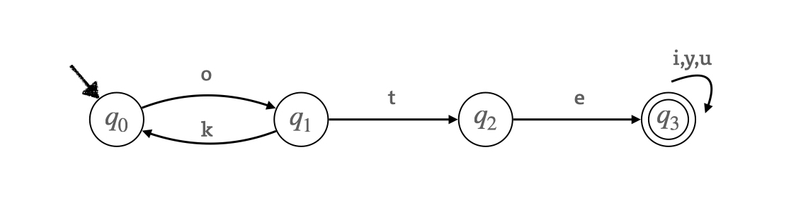
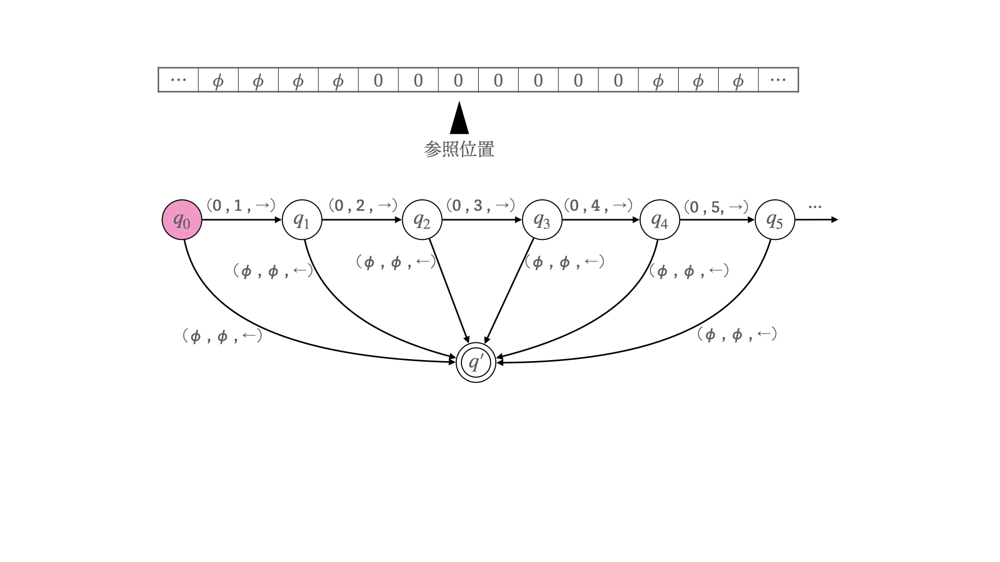
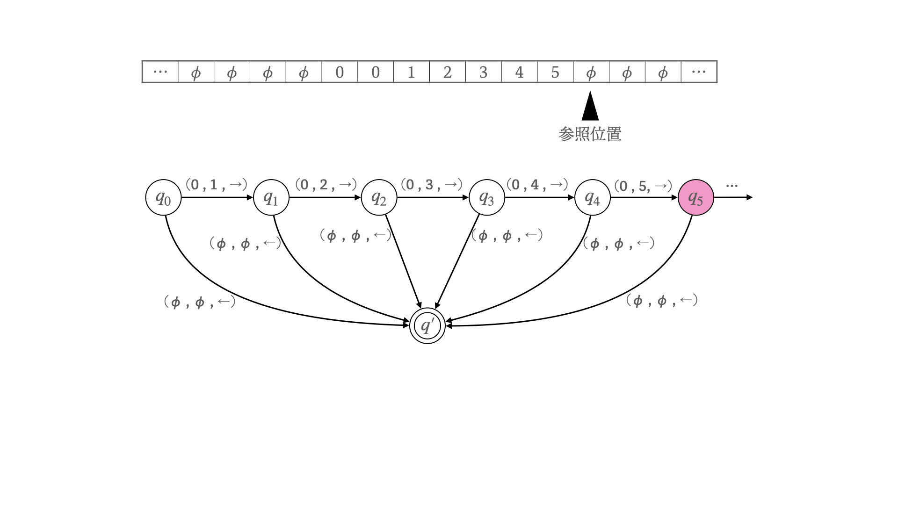
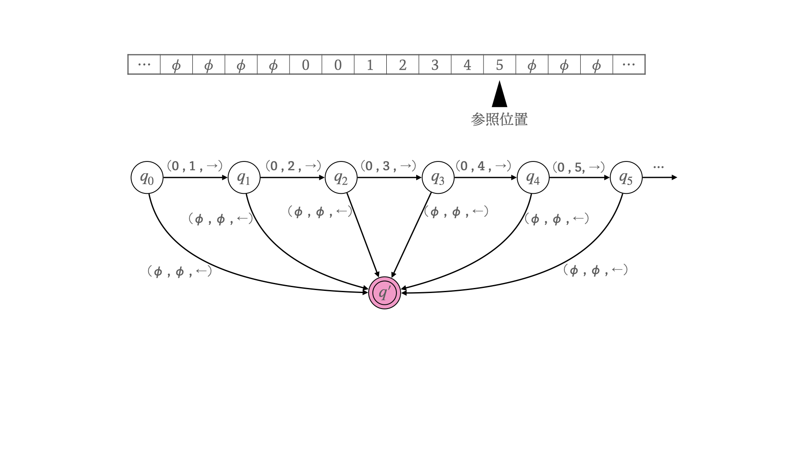

この記事は大学の講義のテスト勉強のついでに作られた記事です。丁寧に資料を読み込んで作成しているつもりですが、不勉強な部分があるかもしれないのでご注意ください。
あるオートマトン \(D\) を以下のパラメータを用いて定義します。
オートマトンは状態間の遷移関係を表現するグラフを用いた数理モデルであり、以下のように表現されます。

このグラフの辺 \(e\) に対して、\(u(e)\) を始点、\(v(e)\) を終点、\(l(e)\) を辺ラベルとします。このグラフは、\(u(e)\) の状態で \(l(e)\) を読み込むことで \(v(e)\) の状態に遷移するということを表します。例えば、状態 \(q_1\) から文字 t を読み込むことで状態 \(q_2\) に遷移します。
通常のオートマトンは、何らかの記号列 \(T\) を入力として受け取り、\(T\) に対して 受理 ( Yes ) か非受理 ( No ) かを判定します。記号列 \(T\) が受理されるのは、初期状態 \(s\) から記号列 \(T\) の記号を先頭から読み込んでいったとき、全ての記号を読むことができて、なおかつ最終的に到達した状態が受理状態(終了状態)である場合に限ります。
このオートマトン \(D\) のパラメータは以下の通りです。
記号の集合をアルファベットと言い、ここではアルファベットを \(\sum\) と表記します。\(\sum\) に属する記号を用いてできる文字列の集合は \({\sum}^{*}\) と表記され、\({\sum}^{*}\) の部分集合を \(\sum\) 上の言語と言います。
要するに、言語 \(L\) を定義するためには、その言語で使用される文に登場する記号の集合(アルファベット) \(\sum\) が定義されている必要があります。また、\({\sum}^{*}\) に存在する文であるからといって、言語 \(L\) で使用される文とは限らないということです。
オートマトン \(M\) が受理する記号列からなる言語を \(L(M)\) とするとき、オートマトン \(M\) は言語 \(L\) を認識すると言います。特に、有限オートマトン認識される言語を正規言語と言います。
\(M\) の受理状態を非受理状態に、\(M\) の非受理状態を受理状態にしたオートマトンを \(\overline{M}\) とする。このとき、\({\sum}^{*}\) に対して \(L(M)\) の補言語(補集合)は \(L(\overline{M})\) である (\(M\) で受理されない記号列のみを受理するオートマトン)。よって、正規言語の補言語もまた正規言語となります。
加えて、\(2\) つの正規言語 \(L_1(M_1)\) と \(L_2(M_2)\) について、\(L_1(M_1) \cup L_2(M_2)\) (集合和) と \(L_1(M_1) \cap L_2(M_2)\) (集合積) も正規言語です。
\(2\) のオートマトン \(M_1 , M_2\) に対して、直積オートマトン \(M_{1,2}\) を定義します。
\(M_1\) が状態の集合として \(Q_1\)を、\(M_2\) が状態の集合として \(Q_2\) を持つとき、\(M_{1,2}\) は状態の集合として \(Q_1 \times Q_2\) を持ちます。ただし、集合の二項演算 \(Q_1 \times Q_2\) は、集合 \(Q_1,Q_2\) の直積 \(\{ab\space |\space a \in Q_1 , b\in Q_2\}\) を返します。
\(M_{1,2}\) の状態の遷移は、\(M_1\) の遷移関数 \(\delta_1\) と \(M_2\) の遷移関数 \(\delta_2\) に対して、以下のように定められます。
また、\(M_{1,2}\) の初期状態は、\(M_1\) の初期状態と \(M_2\) の初期状態を連結したものです。また \(M_{1,2}\) の終了状態は、\(M_1\) の終了状態を \(F_1\) 、 \(M_2\) の終了状態を \(F_2\) としたとき、集合 \(\{ab\space |\space a \in F_1 または b\in F_2\}\)、つまり元のオートマトンで終了状態だった要素を持つ状態の集合と一致します。
\(2\) つの正規言語 \(L_1(M_1)\) と \(L_2(M_2)\) の集合和は \(L(M_{1,2})\) です。また、集合積は \(M_{1,2}\) の終了状態を \(F_1 \times F_2\) にしたオートマトンが認識する言語です。
手続きの枠組みをグラフや定式による抽象化したもの(?)。今回はチューリングマシンについて書きます。
まず、オートマトンやチューリングマシンで入力として与えられる記号列が記されたオブジェクトを(入力)テープと呼ぶことにします。
先のオートマトンがテープを片方向に読み込んで、読んだ記号に対応して内部状態を遷移するだけであったのに対して、チューリングマシンでは、テープ上の参照位置を両方向に移動しながら入力を読み込み、同時に内部状態の遷移およびテープ上の記号の変更が定められます。

チューリングマシンにおいては、遷移関数は状態の遷移とテープ上の記号の状態の \(2\) つの遷移を定めます。チューリングマシンの遷移関数 \(\delta\) について、\(\delta(q , t) = (q\prime,t\prime,d)\) で定義される処理を以下で定めます。

このチューリングマシンは、読み込み開始位置から右に進みながら、空白を表す \(\phi\) を読み込むまで、テープに \(1\) から順に書き込んでいきます(数値に対応する記号があるものとする)。

最終的に、何も記号が書かれていない (空白) 位置に到達したら、参照位置を一つ戻し、そこに書かれた数値を計算結果とします。なおチューリングマシンでは、終了状態に到達したら、テープの状態がどうにかかわらず強制的に読み込みを終了します。
なお、計算理論では一般に、チューリングマシンによって実現可能であることを計算可能であると定義しています。
複数テープのそれぞれに参照位置をもつことで、複数の領域を同時に参照した操作が可能。\(1\) つ目のテープに入力が記されているものとする。
先述のチューリングマシンは、入力テープに対して振る舞いを変えて異なる結果をもたらすことができますが、計算の規則そのものは固定です。すなわち、(先述のチューリングマシンで計算可能な) 異なる \(2\) つの処理 \(A\) と \(B\) の実行を保証するためには、異なる \(2\) つのチューリングマシン \(M_A\) と \(M_B\) を用意する必要があるということです。
万能チューリングマシンとは、チューリングマシンで計算可能な処理全ての実行を保証するチューリングマシンのことです。すなわち、任意のチューリングマシン \(M\) と、それに対する任意の入力 \(t\) に対して、ある入力 \(I\) が存在し、それを万能チューリングマシンに読ませることで、\(M\) が \(t\) を読んだ場合と同じ結果になります。よって、先ほどのように実行したい計算の種類だけチューリングマシンを用意する必要がなく、いかなる計算可能な処理であっても万能チューリングマシン \(1\) つさえあれば処理可能なのです。
万能チューリングマシンは、チューリングマシンを表現するテープを入力として受け取ります。すなわち、万能チューリングマシンに対する入力 \(I\) には、実行したいチューリングマシン \(M\) を符号として表現する部分と、入力 \(t\) に対応する部分を与えます。例えば、自作のプログラムが標準入力を読んで処理を実行することは、万能チューリングマシンに対して、自作のプログラムをチューリングマシンに書き換えたものと、標準入力を与えるということに対応します。このようなマシンが存在していることで、自由にプログラムを書いてマシンによる処理をカスタマイズできるのです。
万能チューリングマシンで計算不可能な処理として、以下の停止性問題があります。
Yes か No かで返す。
もし停止性問題を計算可能なら、符号列 \(M\) が表現するマシンが、自身の符号と同じ符号列 \(M\) を受け取った場合の停止性問題を計算するマシン \(H(M)\) を定義できます。ここで、\(H\) と反対の真理値した値を返すマシン \(\overline{H}\) を定義します。
もし、\(\overline{H}(\overline{H})\) が Yes を返す場合、\(\overline{H}\) の定義より、符号列 \(\overline{H}\) が表現するマシンが自身の符号と同じ符号列 \(\overline{H}\) を受け取った場合に No を返すことになります。この一文で矛盾していることがわかると思います。
非決定性オートマトンと同じアイデアのチューリングマシンを、確率的チューリングマシンといい、量子コンピュータの計算モデルとして使用されます。詳しくはいつか書きます。
関数 \(f\) を漸近的に評価するための評価として、以下で定義されるオーダー表記による分類がされます。
処理したい問題ないしその計算を実行するチューリングマシンの計算時間を、複雑性クラス \(\mathrm{DTIME}\) を用いた分類を行います。
代表的な複雑性クラスとして、多項式 (Polynomial) を表す P 、指数関数 (exponential) を表す EXP などがあります。
また、計算時の空間的なサイズについても、同じような複雑性クラス \(\mathrm{DSPACE}\) による分類がされます。\(\mathrm{DTIME}\) と \(\mathrm{DSPACE}\) の関係について、以下がわかっています。
boolean 値 (\(0\) か \(1\)) を扱う回路のこと。いつかかく。